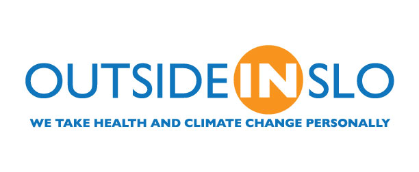

Resources
Falling Fruit is a celebration of the overlooked culinary bounty of our city streets. By quantifying this resource on an interactive map, Falling Fruit hopes to facilitate intimate connections between people, food, and the natural organisms growing in our neighborhoods.
Survey Results
In October 2014, GleanSLO polled the community for an Operations and Strategic Planning Survey. A summary of the results can be found here.
Food Preservation
The Master Food Preservers (MFP) program is now taking calls about questions on food safety, canning fruits and vegetables, freezing, drying, pickling and jelly and jam making!
Call their hotline on Wednesdays between 1:00pm - 3:00pm, (805) 781-1429. More info here.
Climate Friendly Food
GleanSLO is a proud partner of OutsideInSLO because we believe what we choose to eat matters to our health and our climate.
OutsideInSLO is the first public health campaign linking climate change and health impacts in California. The goal of OutsideInSLO is to educate the community on the connections between climate change and health while empowering the community to make healthy choices which have multiple benefits.
“We at the SLO Food Bank take climate change seriously by rescuing safe food that would go to the landfill and gleaning fresh produce locally through GleanSLO. It's part of our mission to help build a healthier community." - Carl Hansen, CEO Food Bank Coalition of SLO County
Download the climate friendly food brochure here.
One Cool Earth
One Cool Earth believes that every child deserves a place to grow. We create amazing school gardens that power healthy, happy, smart youth.
For more information click here